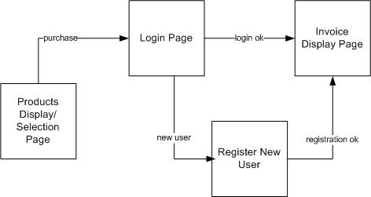

Assignment 2: Upgrading your e-Commerce Web-site
Scenario:
The marketing director of the company asks you (and, optionally, a partner) to upgrade the website that you had previously designed for him (you can choose to start from your assignment #1 projects or start an entirely new project). He is very pleased with the original website but now wants you to personalize the website for each user. He thinks that will increase the overall appeal of the site to users. He asks that you create a registration form through which users can register their pertinent data and that you create a login form and save this in the system. He also wants the site to be more “personalized” so after the user logs in, the pages should greet the user by name and thanks them by name in the invoice. He only wants registered users to be able to purchase products, so you will need get users to login or register before allowing them to purchase products but anyone should be able to view products. The Page sequence should be something like that illustrated below:

Note : it should be impossible to get to the Invoice Display Page without first logging in!
This assignment involves the following new requirements (in addition to all previous requirements):
- Allowing multiple users to register and log in.
- Making user data persistent. Allowing the information entered in the registration form to be saved and used when verifying login. Therefore, all users should be allowed to access your application through the login after their registration information is saved.
- Redirecting users to an invoice of the products/services selections page after passing the login or registration verification.
- Security. No user may access your application (for example, purchasing products) without a validated login.
- Personalization. After logging in successfully, the application should be personalized to the user. For example, display the user’s name on the page.
The minor requirements for this assignment are:
- Cleaner user interface (e.g. putting descriptive errors where they occur, “sticky” forms, appealing layout, etc.)
- Better commented and easy-to-read code.
- More effective program design (i.e. modularity, greater generality).
- Design and implementation around use-cases.
- Carefully tested and debugged application.
NOTE: Please do not use sessions or cookies for this assignment! One purpose of this assignment is to understand the value of using these, which we will do in Assignment 3.
Some general tips:
- You should also try searching on Google or your favorite search engine for information on the problem(s) you are having (e.g. Email validation+javascript). As an ITM major, it is very important that you are able to find information online because there won’t always be a Professor or TA around to help you in the future.
- If you have tried the above but still need some assistance, we can help you with specific questions. Email is probably the best way to get help since we aren’t always online.
Remember to start early and finish early!!
“Use-Cases” for Key Requirements
(1-2) Login, Registration, and Persistence
(A) Implementing User Login
- For each user (new or old), create a user_registration_info object to hold a users registration data (name, password, email, etc.)
- Store user registration information (name, password, email, etc.) in a file after each valid registration. Direct the user to an appropriate page after. The new user should be able to log in next time without re-registering.
- Create functions that validate user data and make use of them when validating registration data.
Hints:
- Create functions that validate the user registration data and add them as prottypes to the user_registration_info object
- Refer to
JSON.stringify() and JSON.parse() for converting arrays and objects to and from strings
Extra Credit: Would it be better to store and access user data using a database? Explain the pros and cons of this. Using this list, what is best for this particular application and why?
Login Page
- Create a simple Login page with email address and password fields as well as submit buttons for logging in or editing registration. Add a “register” link than when clicked will show the user a registration page. You may optionally put the login and registration on the same page.
- The user should only be required to login when purchasing. They should be able to view your store items without logging in first.
- The email address and password combination entered should be checked against the user information array that you retrieve from the saved file. When checking the email address, it should not matter what case was used. For example, email addresss itm352@hawaii.edu, ITM352@HAWAII.EDU, and ItM352@hAWaii.EdU should all be considered the same. That is, email addresss are CASE INSENSITIVE. On the other hand, passwords should be CASE SENSITIVE where “GRADER” is a different password than “grader”.
Processing the submitted login form
- You will have to decide whether to use a self-processing form or to process in a separate file or on the server.
HINT:
Keep the product quantities in a query string that is added to every page request. Handling separate server requests is probably easier than using complicated if-statements on the server to route everything.
Extra Credit: Use microservices to process a login and registration without leaving the page unless successful.
Registration
The following input fields for the registration form are required, but you can add more if you want:
- Email address:
- The format should be X@Y.Z where X is the user address which can only contain letters, numbers, and the characters “_” and “.” Y is the host machine which can contain only letters and numbers and “.” characters Z is the domain name which is either 2 or 3 letters such as “edu” or “tv”.
- Email addresses are CASE INSENSITIVE.
- They must be unique as the email address will be used to identify the user (i.e. it will be the username). There may only be one of any particular email address. Because of this, you will have to find a way to check the new email address against the email addresses saved in your user data file.
Note: Validating email addresses can be tricky. Even if you follow the above guidelines, it may still not be valid, so feel free to get clever and find interesting ways to ensure a truly valid address. Extra credit will be given for any additional checks that correctly validate the address.
Processing the registration
- Again, decide whether to self-process or use a separate validation page.
- Validate all the entered information per the guidelines above, i.e. by using if-else statements.
- If the user neglects to give a value to any of the input fields, the page should be presented anew with a message detailing what was wrong. Use sticky forms for all but the password text fields. Then change the text of the submit button from whatever name you gave it to “Continue” when the user is correcting the form. Hint: Do a self-processing form because the registration page may have to be re-posted to itself many times if there are errors.
-
If everything is valid, then give a message of successful registration. Forward users to the next page where they can view or use the invoice page from assignment #1. Make sure that you save this new registration information to the file.
-
You could redirect to a page that just says “successfully registered” and then use a delayed HTML page redirection. This is just a suggestion.
- If anything is invalid, then the corresponding error message(s) will be printed/ displayed and the customer will see the form again. It may be a good idea to store messages in an array. Why? So that you can use the array to display all error messages at once, instead of seeing multiple screens for each individual message. This also makes it possible to create “indicators” on the form to point out where errors are.
** IMPORTANT ** As in Assignment 1 you MUST do validation on the server before you save registration data. You may not use guards on the client page, but it is not enough by itself.
HINTS:
Extra Credit:
Logged in users should be able to view edit their registration data. Edits must be validated before being saved. Notify the user that the update was successful and allow them to go back to the products page (or redirect them there after notification).
(3-4) Security
- Never show passwords in “clear text” (like in a query string). If you put the password in a query string it must be encrypted.
- Do not allow user registration information to be accessed through a browser (e.g. do not put user data file in document root)
- Never store passwords or other sensitive data on the client unless it’s encrypted or inaccessible to the user
- No user may access the invoice without logging in. You must be able to identify the user when providing an invoice because you will email a copy of the invoice to the address used in their registration
- Make sure a user cannot just type in the URL of the invoice page (perhaps posting data) to access the page directly. Users must pass through the login or registration successfully before they can reach the other pages.
Hint: Think about…
- What would happen if the user logs in successfully then hits the refresh button or goes to another website, and then returns to the application page with the back button? How should this be handled?
Extra Credit: Explain how a user could defeat your security scheme and gain access to your main application page without having to log in.
(5) Personalization on the invoice page
- After logging in from the login page, save the user’s ID (e.g. email address).
- Each page after login should display the user’s name (i.e. in the invoice).
- After displaying the invoice, the user should confirm the purchase and should say “Thank you, <user’s name> for your purchase” and relevant other user info (e.g. shipping address for invoice) and logout the user. After logout, the users ID should not be known and the items purchased should no longer be kept. At this point the inventory should also be reduced by the amounts purchased.
Think about:
- Is there an easy way to do this?
- What if there were multiple pages?
- What if you wanted to display all the user information?
- Would you have to use file I/O?
Individual additional requirements:
The following are additional requirements that will be assigned to you by the instructor or TA. Your assigned individual requirements are not optional and if not implemented, your assignment score will be severely penalized. You may not copy the implementation code from someone (or somewhere) else. You must design and write the code yourself. Copied code, referenced or not, will result in 0 for the entire assignment. If you are confused about the requirement or expectations, ask the instructor immediately. Once you submit your assignment, there are no excuses for not understanding the requirements and expectations. Code for your individual requirement must be generously commented. Clearly indicate in the these comments what your individual requirement is and how it is implemented. If you are working woith a partner you must implement all the individual requirements.
- IR1 Store passwords encrypted. When the user registers, encrypt their password before saving the registration data to the file. When a user logs in, encrypt the password they entered and compare it with the encrypted saved password. Do not decrypt the password. You may find the
crypto library useful.
- IR2 Require that passwords have at least one number and one special character.
- IR3 When the user is registering, suggest a “strong” password that is 10 random characters inclusing numbers and special characters.
- IR4 Keep track of the number of times a user logged in and the last time they logged in. When they login display this information.
- IR5 Keep track of the number of users currently logged in to the site and display this number with the personalization information. For example, if user “dport” is logged in and there are 4 other users logged in, then each page should say somewhere “Welcome Dan, there are 4 users currently using this system.” Whenever a user logs out (for this assignment, put a logout button on the invoice page that removes the login identification and sends the user to the login page), the number should decrease accordingly. HINT: Store this iunformation as a global array variable on the server. Whenever a user logs in or registers, add their email address (or username) to the array.
Final steps:
Run and test your program before and after uploading to the class server. You must place all your files in the Assignment2 folder on the class web server, using the itm352student account, in a sub-folder called <Lastname_team_member1>_<Lastname_team_member2>
** VERY IMPORTANT: ** You must have an “index.html” file in this folder to start your program (either HTML redirect to your login page or something equivalent). You must have the email address “itm352@hawaii.edu” with the password “grader” set in your program to enable grading of your assignment.
** Submission: **
See the Laulima assignment for details.
Checklist:
- Put author’s name and program description as comments in files
- Commented
- Credit for use of other’s code
- Used good file names
- Good code formatting
- Used proper/suitable variable names
- Proper data validation (does not allow invalid choices), does not allow bad data inputs, does not allow characters that are used as separators
- Defined a sensible file format for making user account data persistent
- Has user account for ‘itm352@hawaii.edu’ with password ‘grader’ for test login as well as email addresss and passwords for your team members
- Allow for multiple products to be selected and purchased simultaneously
- Uses sticky forms
- Check for existing email address in registration
- Redirects ONLY when login was successful, not when login failed
- Redirects ONLY when registration was successful, not when registration failed
- email address registration check is case insensitive
- Password check is case sensitive
- Covered all new requirements (login, registration, persistent data, personalization, security)
- Good user interface design – errors are descriptive and appear at error location, appropriate and pleasing GUI, appropriate use of HTML tables, uses CSS
- Modularization, things are organized into functions and separate files
- No extra files
- No redundant data
- Correct output
- Application starts with index.htm or index.php file
- No parse errors or warnings
If working with a partner the following are also required:
- Allows user to view and edit their registration data
- Implemented all IRs